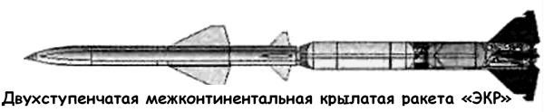

Проект «ЭКР» («Экспериментальная крылатая ракета»)
Известно, что даже в первые послевоенные годы, когда перед коллективом Сергея Королева была поставлена задача воспроизвести немецкую баллистическую ракету «Фау-2» и на ее основе создать беспилотный носитель атомного заряда дальнего действия, сам Главный конструктор и его соратники не оставили надежды реализовать собственные планы по созданию аэрокосмических систем.
Памятуя о своем опыте работы над ракетопланами и крылатыми ракетами в ГИРДе и РНИИ, Сергей Королев писал в записке к эскизному проекту «Р-3»:
«Одним из перспективных направлений в развитии ракет дальнего действия является разработка крылатой ракеты.
Осуществление крылатой ракеты находится в некоторой связи с успешным развитием баллистических ракет дальнего действия…»
Неудачи, преследовавшие немецких конструкторов при испытаниях и боевом применении крылатого реактивного снаряда «Фау-1», о которых Королев наслушался еще в Германии, побудили Главного конструктора более осторожно подойти к любимой теме. Было решено проработать эскизные проекты двух подвариантов экспериментальной крылатой ракеты (ЭКР) — одноступенчатой («КН») и составной («КС»).
Одной из главных проблем крылатой ракеты дальнего действия считалась необходимость управлять ею на протяжении всей траектории до самой цели. Коллеги по Совету Главных конструкторов уверяли Королева, что такую систему на данном этапе создать невозможно.
В это время к работе подключился Борис Евсеевич Черток, предложивший создать систему автоматической навигации по звездам! Для реализации его идей в структуре королевского конструкторского бюро появилась лаборатория Израэля Мееровича Лисовича.
Чтобы создать систему автоматической астронавигации, необходимо было решить ряд серьезных проблем.
Во-первых, требовалось разработать систему слежения за звездами. Она осложнялась тем, что сильное влияние оказывали световые помехи (полярные сияния, серебристые облака, «ненужные» звезды и так далее). Эту проблему решили за счет создания устройства с поворачивающимся зеркалом. Гироскопическая стабилизация позволяла удерживать направление на звезду, даже если она на время исчезала из поля зрения.
Во-вторых, нужно было сконструировать счетно-решающую машину, выдающую команды на автопилот. Сейчас, когда компьютеры стали частью нашей жизни, эта часть технического задания представляется довольно простой. Но в те времена компьютеры еще только создавались, как создавалась и ракетная техника. После перебора нескольких вариантов было выработано остроумное решение: конструкторы предложили вместо сложной вычислительной машины использовать кулачковый механизм, который, несмотря на свою примитивность, давал прекрасные результаты: погрешность по углу не превышала одной угловой минуты.
В-третьих, необходимо было создать искусственную вертикаль.
Для управления ракетой требовалось вырабатывать направление к центру Земли, что позволяло ракете, в совокупности с ориентацией на звезды, определять свое местоположение.
Но и эта проблема была решена сотрудниками Чертока.
Первые успехи вдохновили сторонников «крылатой тематики». Непосредственный исполнитель работ по этой теме Игорь Моишеев даже утверждал, что «межконтинентальность может быть достигнута только на крыльях».

Королев всячески активизировал проведение НИР «Комплексные исследования и определение основных летно-тактических характеристик крылатых составных ракет дальнего действия». Внутри НИИ-88 хватало противников «крылаток», считавших эти исследования авантюрой, поэтому результаты требовалось получить в кратчайшие сроки.
Действующий макет системы астронавигации был отлажен и готов к установке на самолет к началу 1952 года. В течении второй половины 1952 и первой половины 1953 года было совершено девять испытательных полетов самолета «Ил-12» по маршруту Москва — Даутавпилс.
Вновь обратимся к воспоминаниям Бориса Чертока:
«Летчик должен был вести самолет так, чтобы стрелка индикатора сохраняла по возможности нулевое положение. Это означало, что самолет идет по трассе, указанной системой астронавигации.
При выходе на цель на пульте штурмана и доске пилота загорался красный транспарант. Обязанностью штурмана было определение по земным ориентирам действительного положения самолета, благо полеты производились только в ясные ночи. Определив действительное положение по трассе полета в момент появления сигнала «цель», можно было определить погрешность, которую имеет система […]. Летные испытания блестяще подтвердили правильность принципиальных решений. За все время не было ни одного отказа, а ошибка навигации не превышала 7 км.
Последующие расчеты показали, что если бы гироскопические и другие элементы системы были изготовлены с точностями, доступными технологии 70-х годов, то ошибка составляла бы не более 1 км!»
В январе 1952 года Королев выступил на заседании президиума Научно-технического и ученого совета НИИ с докладом, посвященным подведению итогов НИР по теме крылатых ракет.
В докладе им предлагался проект двухступенчатой крылатой ракеты с дальностью полета 8000 километров при стартовом весе около 90-120 тонн. Первая ступень имела мощный жидкостно-ракетный двигатель, с помощью которого должны осуществляться вертикальный старт, разгон и набор высоты до момента разделения со второй ступенью. Вертикальный старт к тому времени был уже хорошо отработан на практике применения баллистических ракет и не требовал сложных стартовых сооружений.
Вторая ступень составной ракеты была крылатой, а в качестве двигателя, который должен был работать на всем маршруте, предлагался сверхзвуковой прямоточный воздушно-реактивный двигатель конструкции Михаила Бондарюка. Расчеты показали, что при высоте полета в 20 километров может быть получена требуемая дальность при скорости до 3 Махов.
В своем выступлении Королев подробно проанализировал два альтернативных варианта навигации — астронавигационный и радиотехнический.
«Основным достоинством метода астронавигации, — говорил он, — является независимость точности управления от дальности и продолжительности полета и отсутствие какой-либо связи с наземными станциями… Проведенные в этой области исследования показывают безусловную реальность создания в ближайшем будущем подобного рода системы, работающей пока в условиях ночи или сумеречного освещения. Неясность путей решения задачи управления в условиях полного дневного освещения для высот до 20 км является пока основным недостатком, предложенного варианта системы. […] Основная трудность создания элементов системы автоматической астронавигации заключается прежде всего в очень высоких требованиях к их точности. […] Предстоящие в этом году испытания на самолете макетов основных принципиальных узлов системы астронавигации должны дать ответ на многие чрезвычайно важные вопросы и, прежде всего, подтвердить возможность получения необходимой точности».
Успешное проведение самолетных испытаний сняло все сомнения в работоспособности системы астронавигации.
К этому же времени были получены и обнадеживающие результаты по экспериментам Бондарюка с прямоточными воздушно-реактивными двигателями.
Однако коллектив Королева уже не мог вести два направления сразу, и тогда Генеральный конструктор принял решение о прекращении работ у себя и передаче всего задела в Министерство авиационной промышленности.